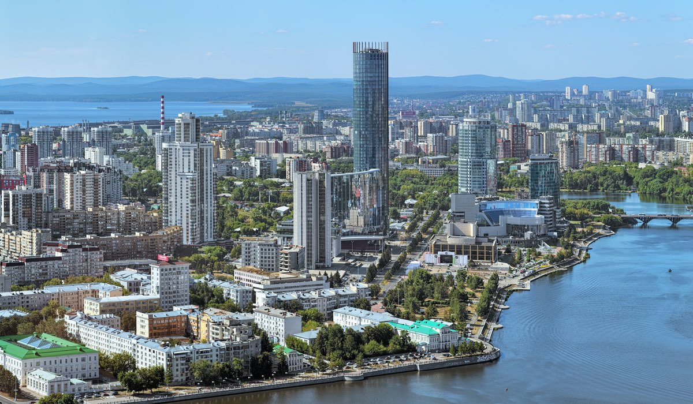

Сибирь известна своим суровым климатом, особенно в зимний период, когда температура может опускаться до -50°C и ниже. Однако летом в южных районах Сибири может быть довольно жарко, с температурами, достигающими +30°C. Такие экстремальные перепады температур создают уникальные условия для жизни и хозяйственной деятельности. Природа Сибири чрезвычайно разнообразна: от арктических пустынь на севере до степей на юге, от горных хребтов до равнин, от вечной мерзлоты до плодородных почв. Сибирь богата природными ресурсами, включая нефть, газ, уголь, золото, алмазы и другие полезные ископаемые, что делает её важным экономическим регионом России.